1. Berapa akun yang kamu punya?
Email, game online, media sosial, akun belajar, dompet digital, toko online... Banyak, kan? Setiap akun itu seperti satu pintu, dan kata sandi adalah kuncinya. Kalau kuncinya gampang ditiru, siapa saja bisa masuk.
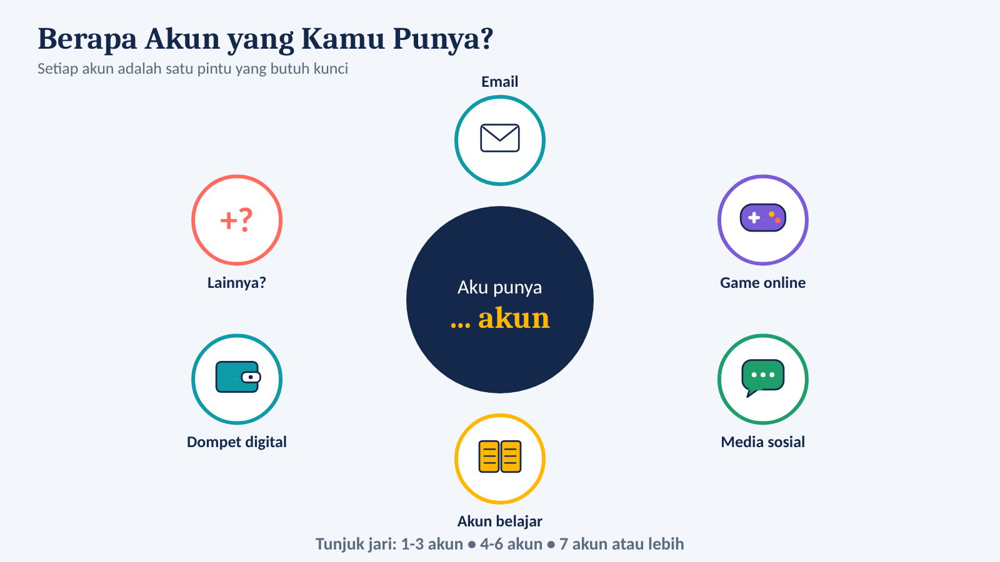
2. Cerita: Akun Bintang Dibajak
Cerita rekaan, tetapi bisa terjadi pada siapa saja. Bintang memakai sandi bintang2010 di semua akunnya. Situs game kecil diretas, daftar sandinya bocor, lalu peretas mencoba sandi yang sama di email dan akun belajar Bintang. Cocok! Teman-teman Bintang pun dapat pesan penipuan dari akun Bintang.
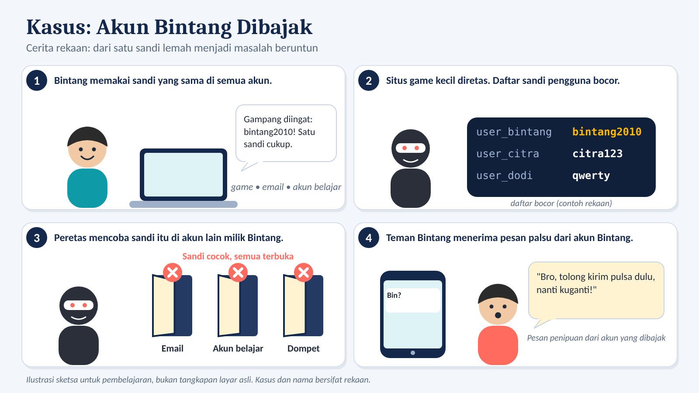
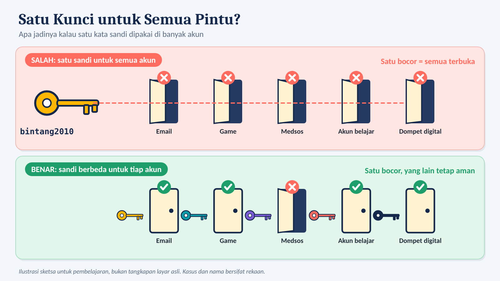
3. Empat cara peretas menebak sandi
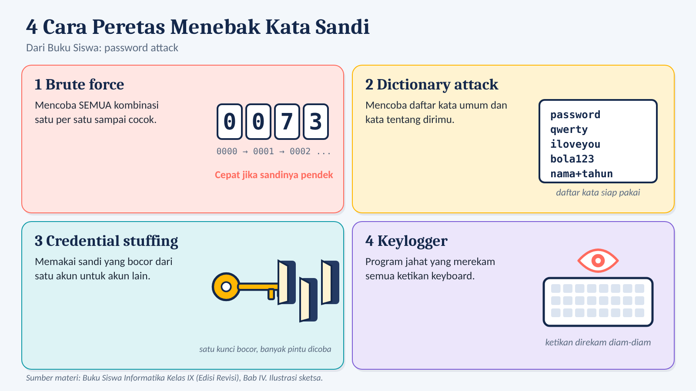
| Serangan | Cara kerja |
|---|---|
| Brute force | Mencoba SEMUA kombinasi satu per satu |
| Dictionary attack | Mencoba kata umum dan hal tentang pemilik akun (hobi, klub bola, nama hewan) |
| Credential stuffing | Sandi bocor dari satu akun dicoba di akun lain |
| Keylogger | Program jahat yang merekam ketikan keyboard |
Mini game: Pasangkan!
Klik satu serangan di kiri, lalu pasangannya di kanan.
Detektif Tebak Sandi
Lihat profil publik rekaan "Alya". Dari postingannya, kamu bisa menebak sandinya, lho!
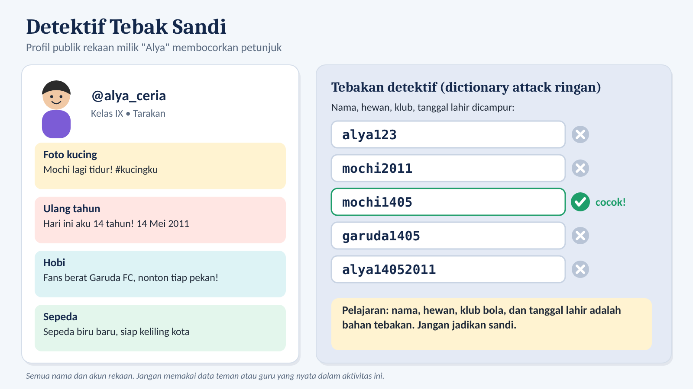
4. Ruang tebakan: pilihan ^ panjang
Bayangkan sandi sebagai deretan kotak. Tiap kotak bisa diisi beberapa pilihan karakter. Jumlah kemungkinan = pilihan ^ panjang.
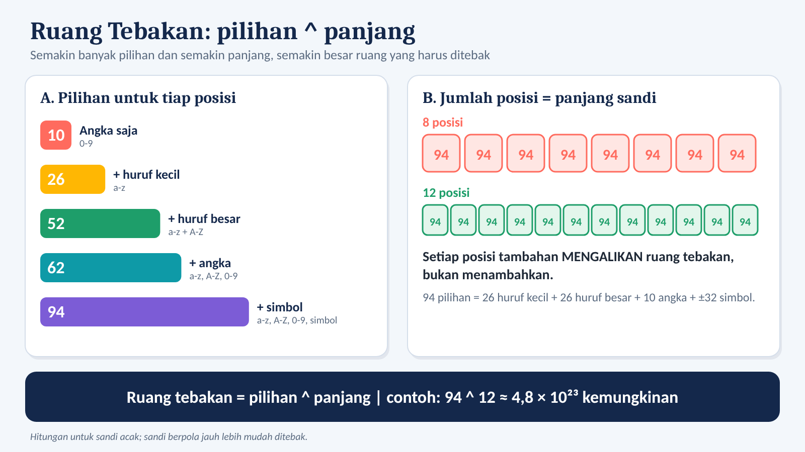
Kalkulator ruang tebakan
Ruang tebakan:
Waktu coba semua kemungkinan (model belajar: 10 miliar tebakan/detik, sandi acak):
Angka ini hanya model belajar. Sandi berpola (nama, tanggal lahir, kata umum) ditebak jauh lebih cepat.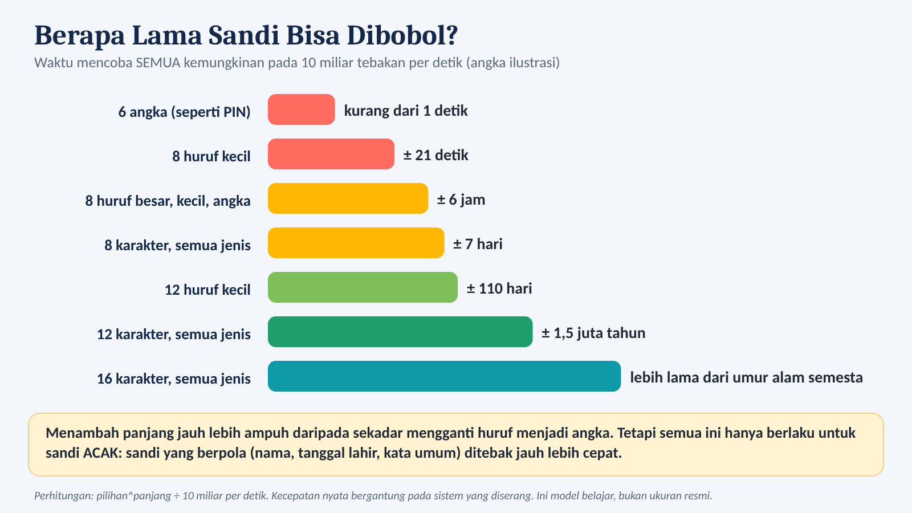
5. Resep KUNCI: membuat sandi kuat
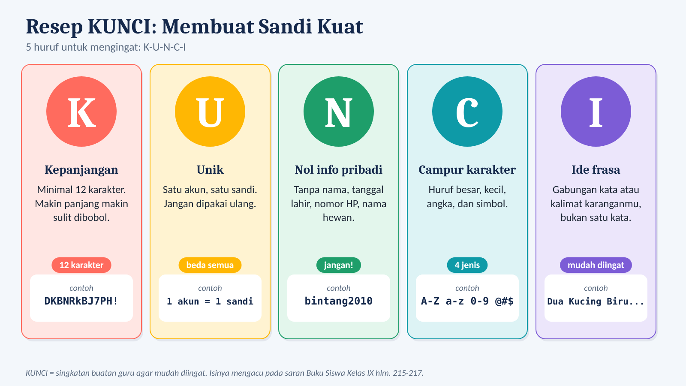
| Huruf | Artinya | Tips |
|---|---|---|
| K | Kepanjangan | Minimal 12 karakter. |
| U | Unik | Satu akun, satu sandi. |
| N | Nol info pribadi | Tanpa nama, tanggal lahir, nomor HP, nama hewan. |
| C | Campur karakter | Huruf besar, kecil, angka, simbol. |
| I | Ide frasa | Gabungan kata acak atau kalimat karanganmu. |
6. Tiga teknik sandi yang gampang diingat
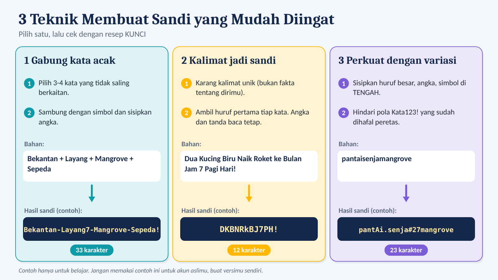
- Gabung kata acak. Contoh:
Bekantan-Layang7-Mangrove-Sepeda! - Kalimat jadi sandi. "Dua Kucing Biru Naik Roket ke Bulan Jam 7 Pagi Hari!" jadi
DKBNRkBJ7PH! - Perkuat dengan variasi.
pantaisenjamangrovejadipantAi.senja#27mangrove
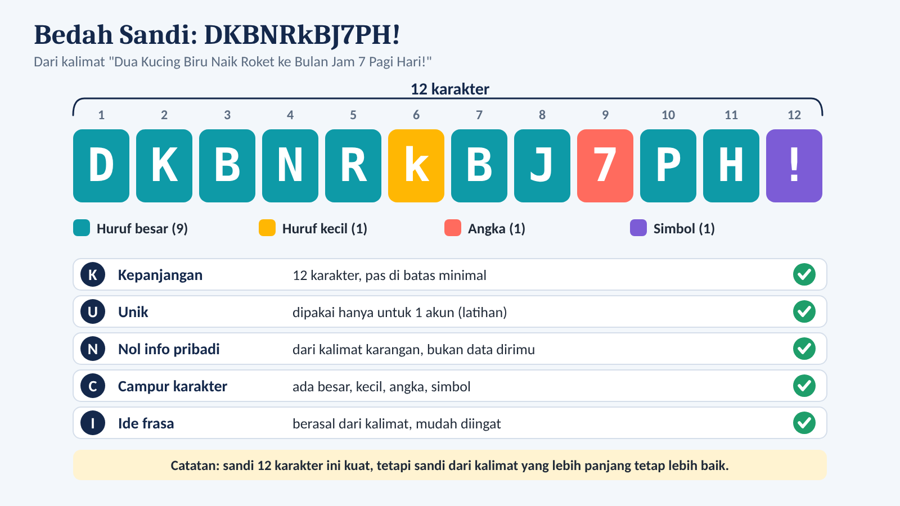
Pembuat sandi dari kalimat
Karang kalimat unik (bukan tentang dirimu!), lalu lihat hasil huruf pertamanya. Tambahkan angka dan tanda baca di kalimat supaya ikut terambil.
Hasil: -
7. Skor KUNCI: seberapa kuat sandimu?
Setiap cek yang terpenuhi = 1 poin. 0-1 sangat lemah, 2 lemah, 3 sedang, 4 kuat, 5 sangat kuat.
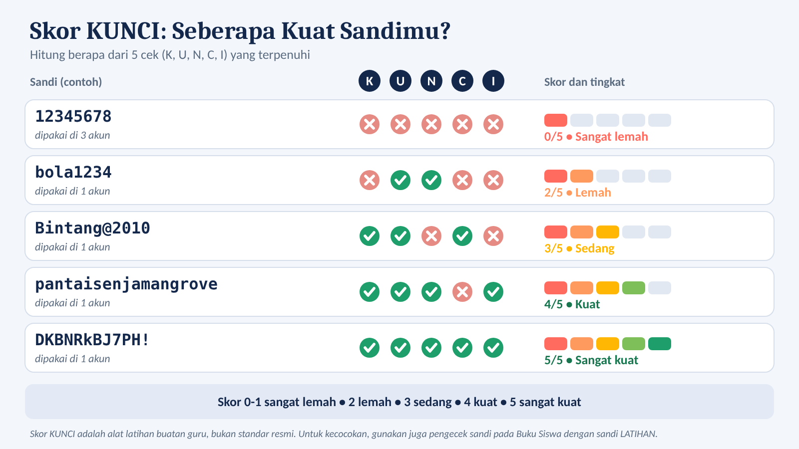
Simulator Skor KUNCI
8. Resep JAGA: menjaga sandi
Sandi sekuat apa pun bisa bocor kalau kebiasaannya salah.
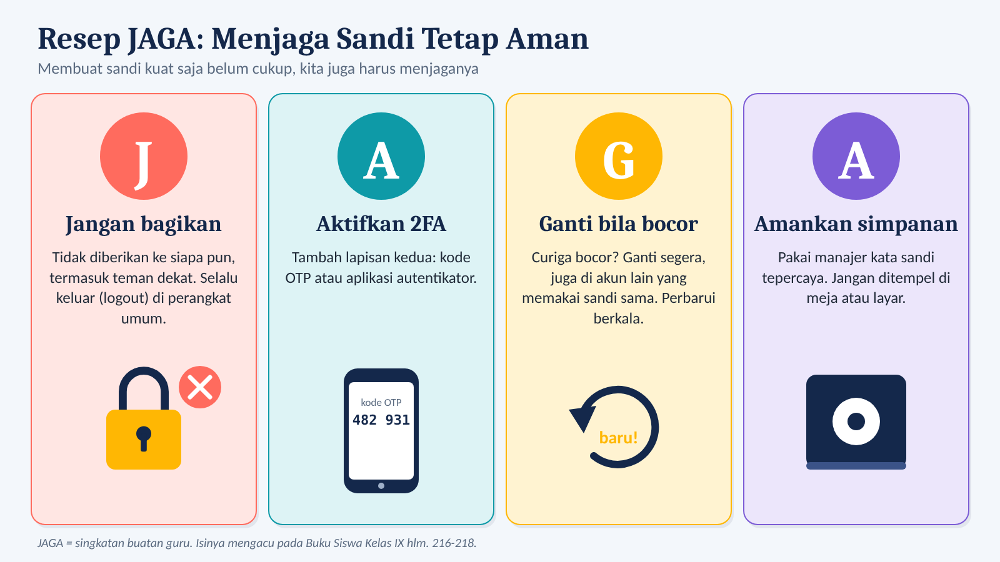
| Huruf | Tindakan | Contoh |
|---|---|---|
| J | Jangan bagikan | Tidak memberi sandi atau OTP ke siapa pun. Logout di komputer umum. |
| A | Aktifkan 2FA | Setelah sandi, ada kode kedua (OTP, aplikasi autentikator, sidik jari). |
| G | Ganti bila bocor | Ada login aneh? Ganti segera, juga di akun lain yang memakai sandi sama. |
| A | Amankan simpanan | Pakai manajer kata sandi tepercaya, bukan kertas di monitor. |
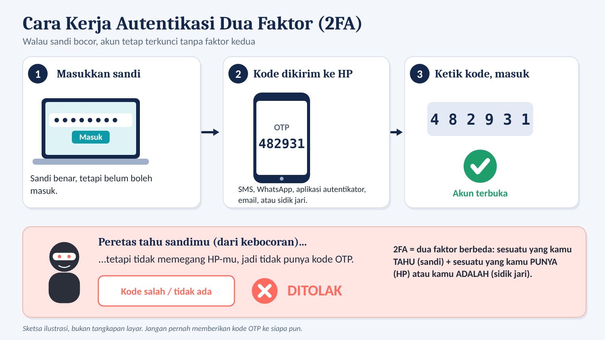
2FA vs MFA: 2FA memakai dua faktor, MFA lebih dari dua. Faktor: sesuatu yang kamu tahu (sandi), punya (HP), atau adalah (sidik jari).
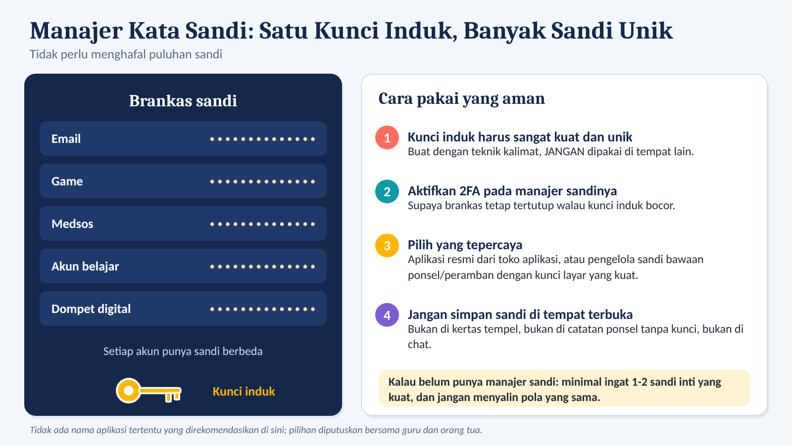
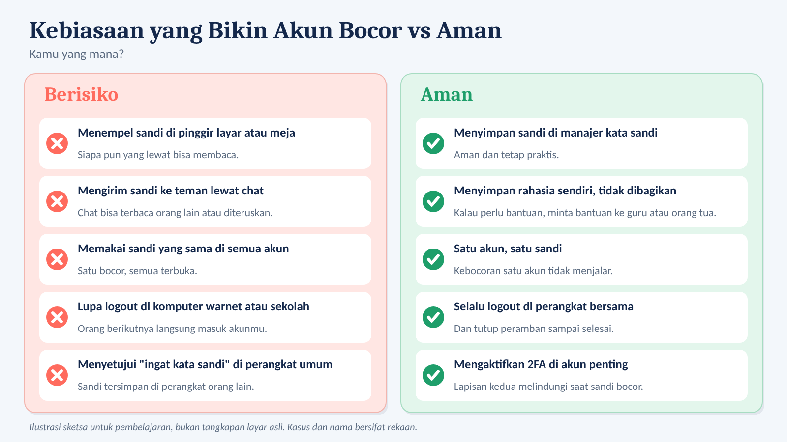
9. Rangkuman
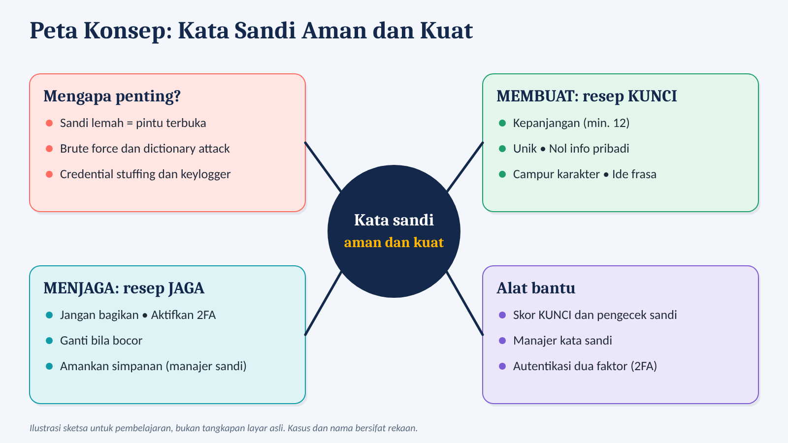
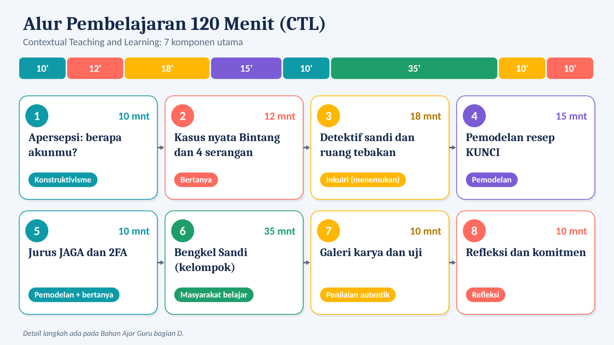
10. Kuis kilat
11. Refleksi dan komitmen 24 jam
Apa hal paling mengejutkan yang kamu pelajari? Centang aksi yang akan kamu lakukan dalam 24 jam: